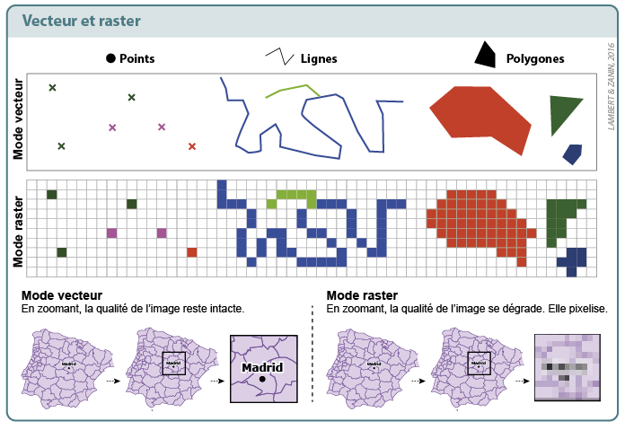
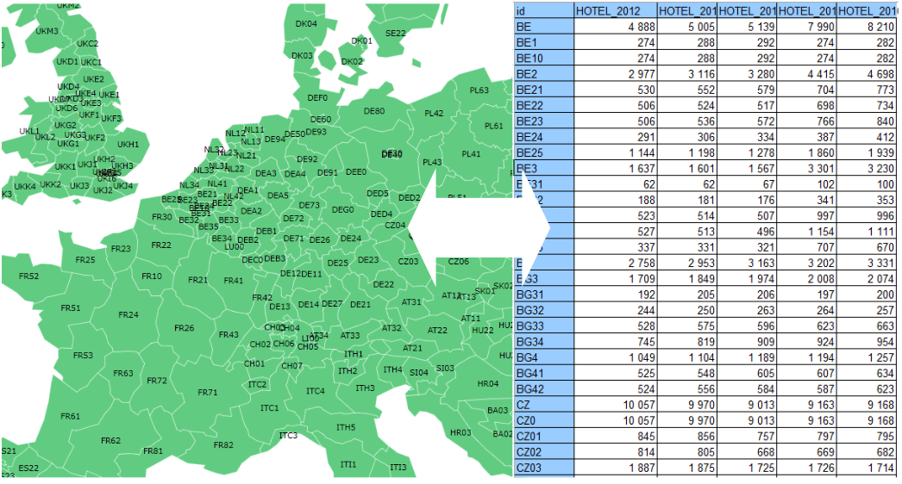

2 Les données spatiales
Pour stocker, manipuler, analyser et représenter de l’information géographique, on distingue généralement 2 types de données : le raster et le vecteur.

Les données vectorielles sont souvent associées à des données attributaires.
